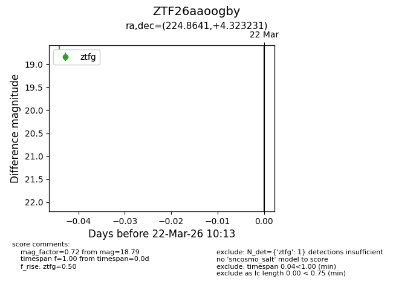
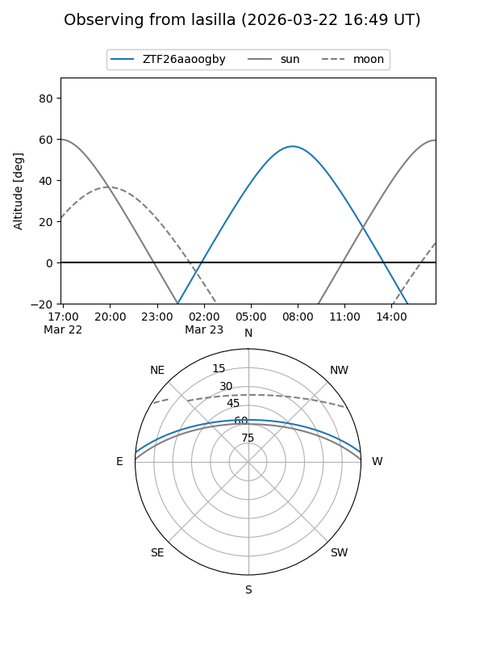
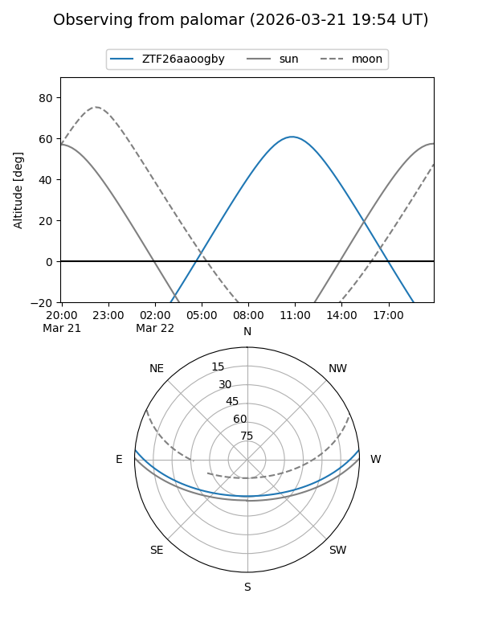

ZTF26aaoogby
Target ZTF26aaoogby at 2026-03-22 10:15
Aliases and brokers:
FINK: link
Lasair: link
ALeRCE: link
alt names
ZTF26aaoogby (ztf,fink_ztf)
Coordinates:
equatorial (ra, dec) = 224.8641,+4.32323
equatorial (HMS+DMS) = 14:59:27.38,+04:19:23.63
galactic (l, b) = (1.8568,+51.90055)
Flags:
Photometry:
last ztfg=18.79
1 ztfg detections
Lightcurve

Visibility


Additional plots